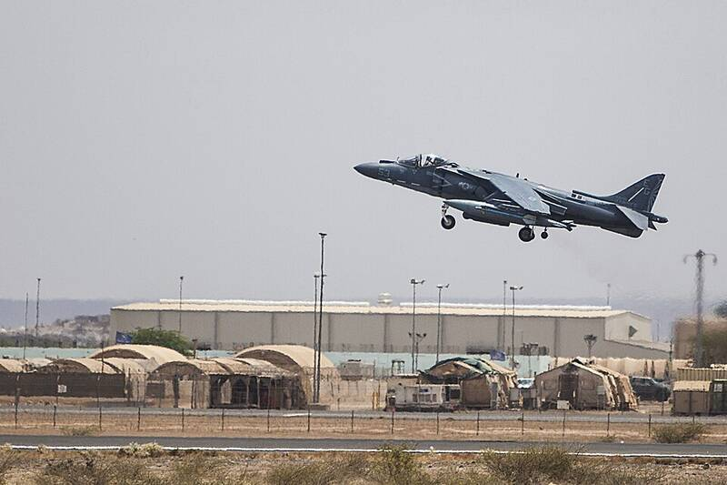

Camp Lemonnier Djibouti Djibouti · Military base · 11.547°N, 43.155°E An AV-8B Harrier taking off near Camp Lemonnier, 2014. Photo: Sgt. Austin Hazard, U.S. Marine Corps, Public domain (source) The main U.S. military base in Africa. 1 Open in the interactive Watcher Sources Camp Lemonnier Wikipedia